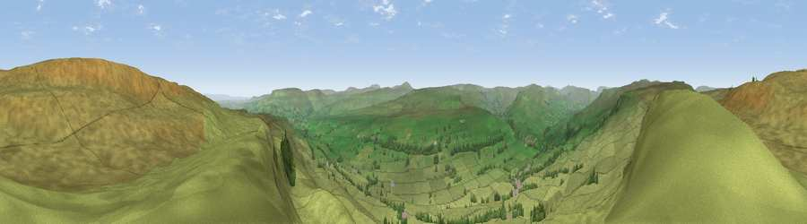

Viewpoint near Askrigg
#8130 in England · top 13% of its area beats it · near AskriggWhere it is
The exact computed spot (SD 96425 92325). Click the marker for map links.
The view, rendered

A 360° render of this exact spot computed from the terrain model, tree cover and land cover — summer colours, afternoon light, calibrated against photographs of famous viewpoints. Real trees, hedges and buildings will differ in detail.
The panorama
Grey silhouette: terrain skyline in each direction (720 bearings, Earth curvature and refraction included). Dashed green: skyline with trees (+15 m) and buildings (+8 m) as obstacles. Blue strip: how far the ground is visible on each bearing.
Where the view opens
Wedge length = distance to the farthest visible ground on that bearing (vegetation-aware). Rings at 10, 25 and 50 km.
What fills the view
96% grassland · 3% woodland
Angular shares of the visible panorama (visual magnitude), not map area. Landscape diversity 0.08 (0–1 Shannon).
Key numbers
More beautiful places nearby
The staircase of upgrades: each row has a higher view potential than everything closer. Driving times are estimates from straight-line distance, calibrated against real road routing — check an actual route before setting out.
| Place | Direction | Drive | Score |
|---|---|---|---|
| Viewpoint near Askrigg | NE · 0 km | ~1 min | 69.9 |
| Viewpoint near Cotterdale | WNW · 9 km | ~18 min | 74.4 |
| Viewpoint near West Witton | ESE · 10 km | ~20 min | 75.5 |
| Viewpoint near Buckden | S · 14 km | ~25 min | 77.3 |
| Viewpoint near East Witton | ESE · 19 km | ~32 min | 77.8 |
| Whernside | WSW · 25 km | ~40 min | 79.9 |
| Viewpoint near Kirby Knowle | E · 49 km | ~70 min | 80.5 |
| Beacon Hill | E · 50 km | ~71 min | 84.7 |
54.32649, -2.05647 · source: screening · position refined by local search. Computed location — check access rights before visiting.